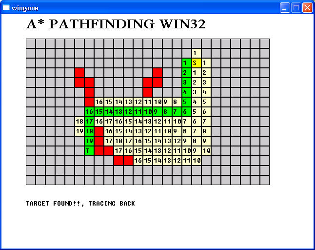

Articles
Y2S1 Pathfinding
 | Hits: 2861
| Hits: 2861

PathFinding Algorithm is developed in 2006. These small applications are my work from the Pathfinding and STL Algorithm module. I'm quite amazed and impressed in the mathematical power which is used to produce the Pathfinding algorithm.
The demo is created in order to demonstrate the algorithms as visualization.
NAME : A* Pathfinding, LEE Pathfinding
PLATFORM : WIN32
DEV : VC2005
CONTROL : Keyboard
On-Screen instructions
The programs are quite easy to play with, and it can run in your windows platform so I thought you might want to try it. I've provided two popular different Pathfinding program which're called LEE and A*.
In this module, we've studied in more advanced data structures, and software development methods. Honestly, this is my first time I try to mess around with the STL, and now I'm their real fan!
For everyone who have no idea about STL. It's a very useful library contain a huge collection of advanced data structures and algorithms. If you aren't developer, just skip it and go play my game. Otherwise, you might want to try it in your next project, and it's highly recommended!
Screen shots
{kind=link}
{kind=link}
{kind=link}
{kind=link}